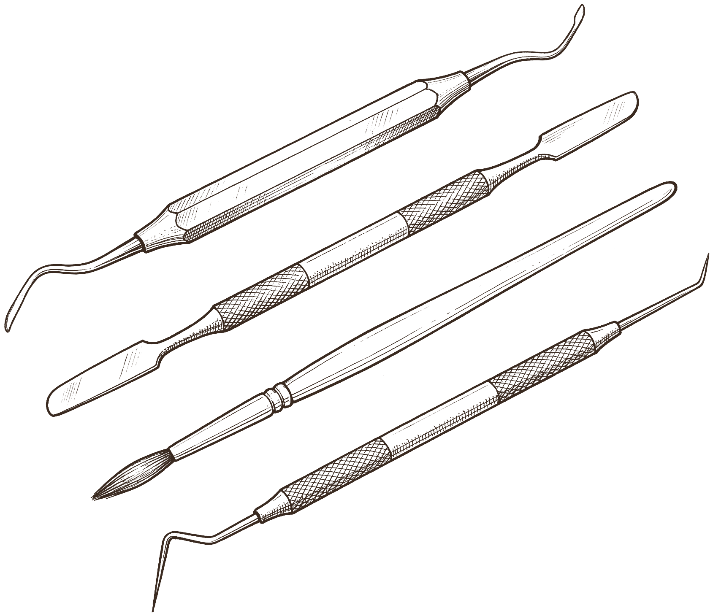
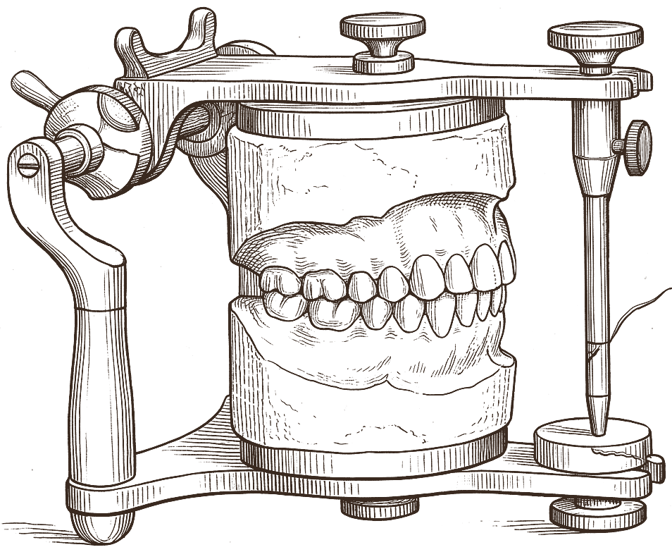

Laboratorija Olujić
Da li znate
čime se bavi
zubni tehničar?

Nedavno sam vas to pitala na svom profilu.
Iznenadilo me je koliko vas je odgovorilo:
„ne znam.”
A onda sam razmislila –
i nije toliko čudno. →
Iza scene
Kada imate problem
sa zubima, idete
kod stomatologa.

Sa njim razgovarate, dogovarate terapiju i njemu se obraćate za sve što vas zanima.
Ali kada su vam
potrebni novi zubi,
iza scene postoji
još neko.
Zubni tehničar.